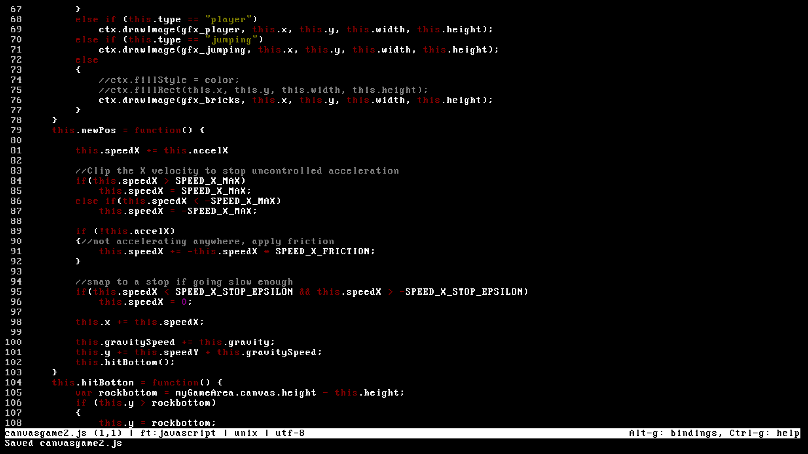

Jack Cary Canvas game enhancement 1. I used the Audio function to create a jump and death sound, as well as flags for both to control when they should play. 2. For the key input, I just added two event listeners, one for a keypress and one for a key release. Arrowing up acts identical to pressing the old accelerate button. Arrowing right or arrowing left activates the new sidestep function, which sets the speed on the gameobject in the appropriate direction. Releasing either arrow key stops the object’s lateral movement. 3. I added two new buttons in the html that trigger the startGame() and the new function pause(). I used two toggles to determine whether the game was already start and if it was paused. 4. I used the Image() function to load the required textures. All textures are located in the gfx subdir. 5. For the animation of the player, I changed the ‘type’ variable and rendered differently based on that. I set changed the type based on the player’s jump input, and on landing on the ground. 6. For my improvement, I first changed the acceleration rates to make the physics a little different. For my next change, I added a flag so that the player is unable to jump mid-air. They can hold the button for as long as they want initially, but after it is released they are unable to add extra height until landing. My final change was to add better movement in the X direction. This improved movement system adds proper friction and acceleration. I also widened the gaps in the poles as I felt the new movement was a little harder to get used to.
Summary: I felt this assignment was pretty easy. Most of the code could be implemented easily. I think my improvement to the movement was pretty good. I added some movement constants to the top of the js file and with some more tweaking I think the movement could feel even better and more intuitive. I did the enhancements on a local file using my firefox browser. When I uploaded it to github and used chrome the physics felt remarkably different.